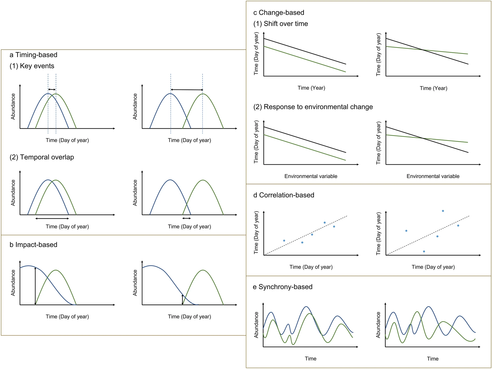
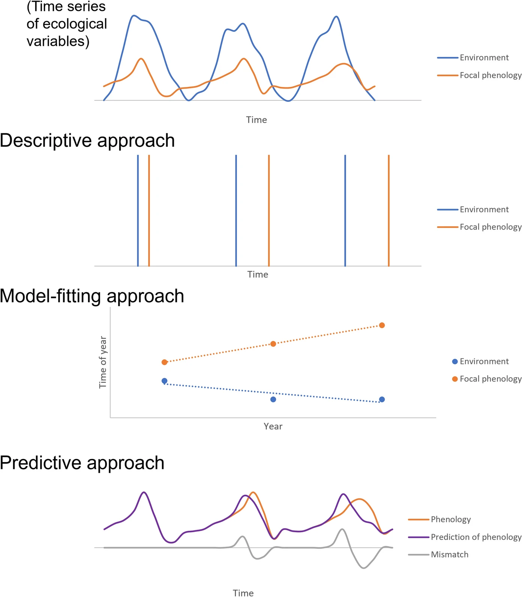
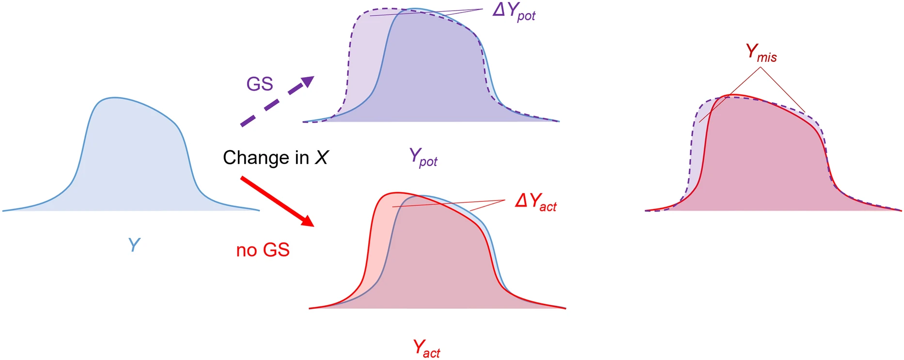
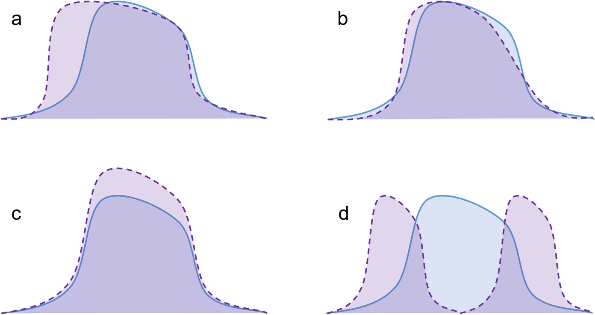
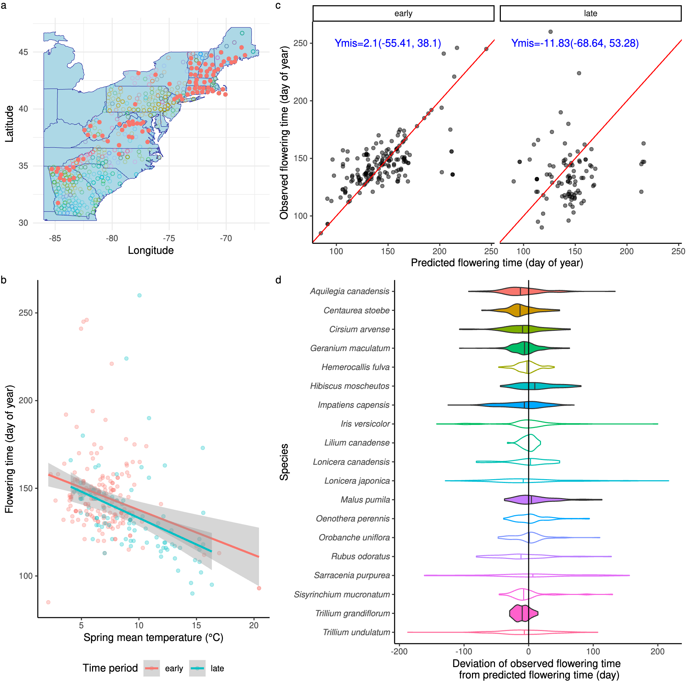
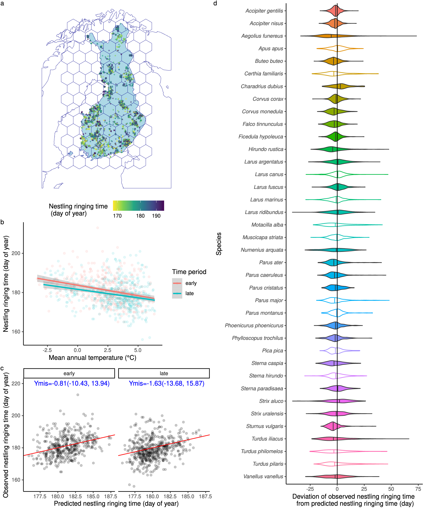
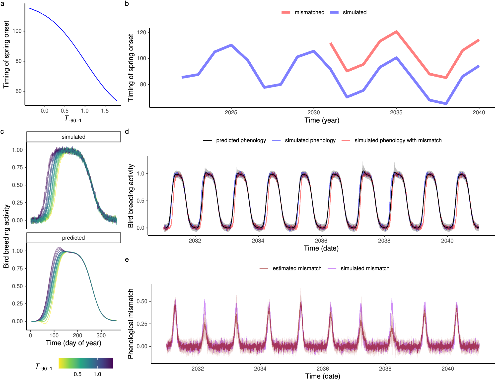
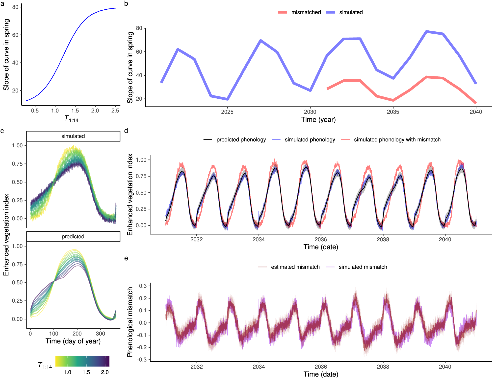
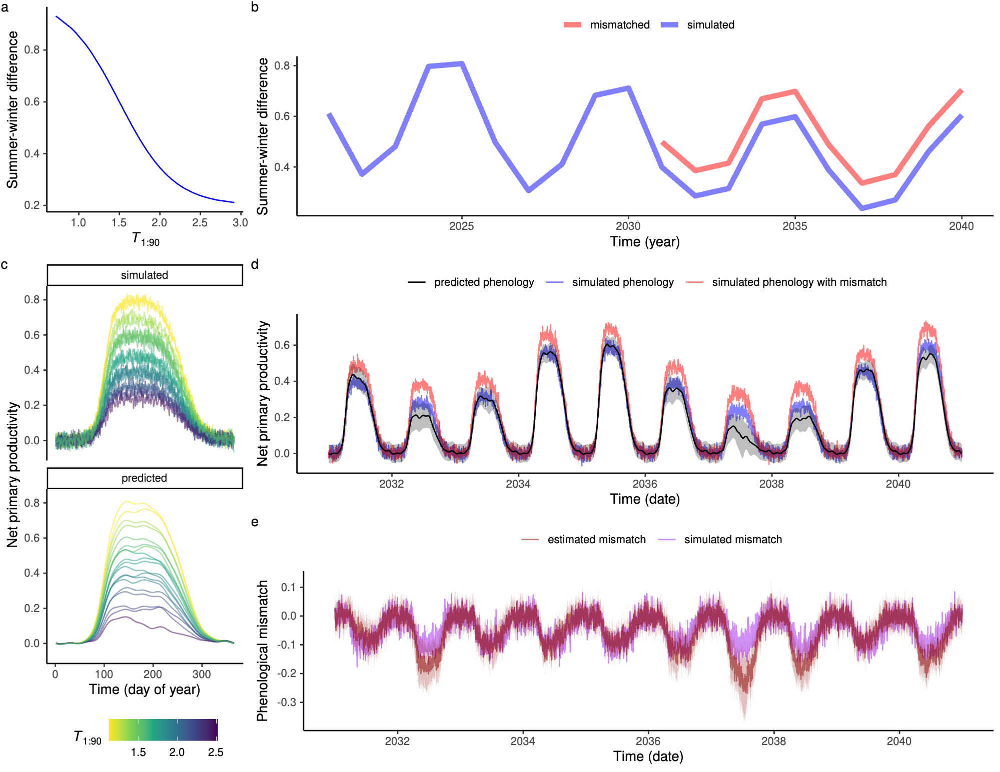
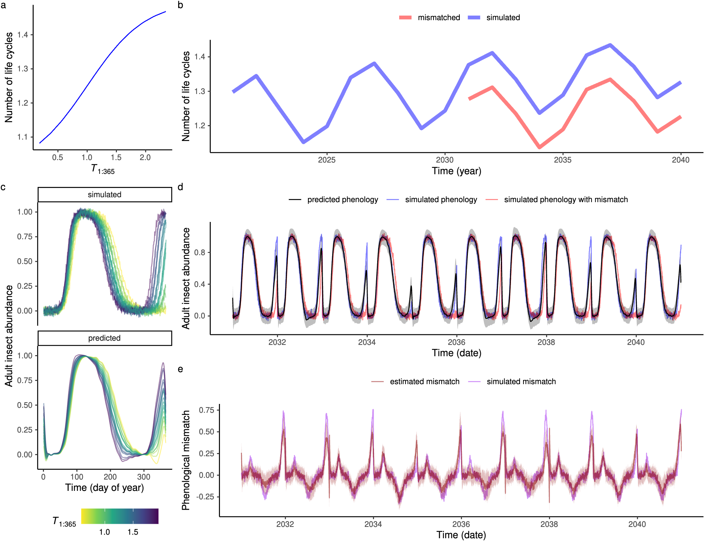

Highlights
- We proposed a framework and method to measure phenological mismatch by assessing loss in predictive skills under climate change.
- Significant phenological mismatches were found in plant and bird phenology across regions using empirical data.
- The method effectively identified various types of phenological mismatch in simulation experiments.
Abstract
Context Climate change is driving phenological shifts across landscapes, but uncoordinated shifts might cause a potential “phenological mismatch.” There has been little consensus on the existence and magnitude of such a mismatch. The lack of agreement among studies can be attributed to the wide variety of definitions for the term “phenological mismatch,” as well as the methods used to measure it. The lack of comparability among measures of phenological mismatch creates a challenge for conservation.
Objectives We proposed a novel theoretical framework to generalize existing measures of phenological mismatch and an approach to quantify the decoupling between phenology and the environment using the loss in predictive skill over time. We aimed to estimate the magnitude of phenological mismatch on large spatial scales and test the proposed predictive approach’s ability to detect multiple types of phenological mismatch.
Methods We modeled historical climate-phenology coupling and quantified phenological mismatch as the deviation between observed and predicted phenology under climate change. First, we used two large empirical spatiotemporal datasets to estimate phenological mismatch in plant flowering phenology in the eastern United States and bird reproductive phenology in Finland. Historical climate-phenology coupling was modeled with spatial linear regression. Second, we conducted four simulation experiments representing different types of mismatch during climate change. We recovered simulated phenological mismatch by fitting a data-driven nonlinear model (Gaussian Process Empirical Dynamic Modeling) and predicting phenology.
Results In the eastern US, we found that advancing plant flowering phenology generally matched spring warming from 1895 to 2015, with seven out of the 19 species studied having significant phenological mismatches, with observed flowering time earlier than predictions even considering warming. A similar phenological mismatch was found in birds in Finland from 1975 to 2017, with the bird breeding season advancing more than expected in 21 out of the 36 species studied. In four simulation experiments, we were able to accurately recover the simulated phenological mismatches in the timing of events, pace of development, and intensity of activities, although with greater challenges in quantifying a mismatch in life history.
Conclusions Overall, these case studies show that our prediction-based measure effectively quantifies multiple types of phenological mismatch, providing a more generalizable and comparable measure of phenological mismatch across study systems and scales. This study will enable the investigation of phenological mismatch at large scales, improving understanding of the patterns and consequences of climate-change-induced phenological changes.
Measures of phenological mismatch


A new framework based on prediction


Estimating phenological mismatch on large spatial scales with empirical data


Recovering phenological mismatch with simulated continuous phenology data



